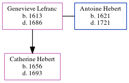

Genevieve Hebert (née Lefranc) 1613 - 1686
[ Home ] | [ Calendar ] | [ Surnames Index ] | [ Census Index ] | [ Family History ]Genevieve Lefranc, the 10 times great-grandmother of Michele Copp (née Phillips), was born in Touraine, Indre-et-Loire, Centre, France in 16131 and married Antoine Hebert (with whom she had 1 child, Catherine) in Ac in 16451.
She died in 1686 in Port Royal, Acadia, Nova Scotia, Canada.
Children
- Catherine was born in 1656
Citations
- U.S. and International Marriage Records, 1560-1900 Online publication - Provo, UT, USA: The Generations Network, Inc., 2004.Original data - This unique collection of records was extracted from a variety of sources including family group sheets and electronic databases. Originally, the information was deriv
Family Tree
Generated by ged2site. Last updated on Jun 6, 2024